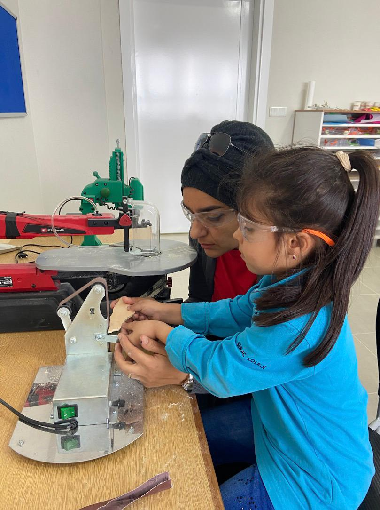
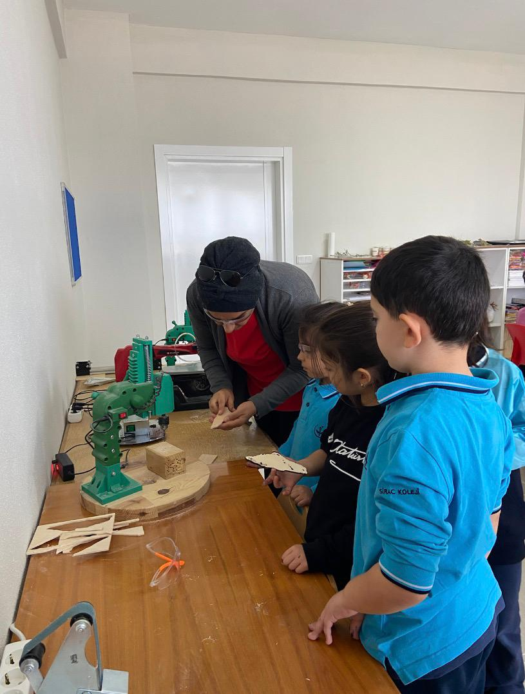

Öğrencilerimizin Hayal Gücünü Sanata ve Emeğe Dönüştürdüğü Yaratıcı Bir Alan
Öğrencilerin üretkenliklerini pekiştirirken estetik duygularını geliştiriyoruz.
Görsel sanatlar atölyesinde çok yönlü üretim faaliyetleriyle öğrencilerin, hem birlikte çalışabilme yeteneklerini hem de bireysel yeteneklerini geliştirmekteyiz. Bu süreçte sanata olan yatkınlıkları ortaya çıkarılırken, analitik düşünme becerileri de desteklenir.
İnce motor becerilerini geliştiren, sabır ve emek gerektiren ahşap çalışmaları.
“Ahşapla şekillenen hayaller, kalıcı eserlerle buluşur.”

